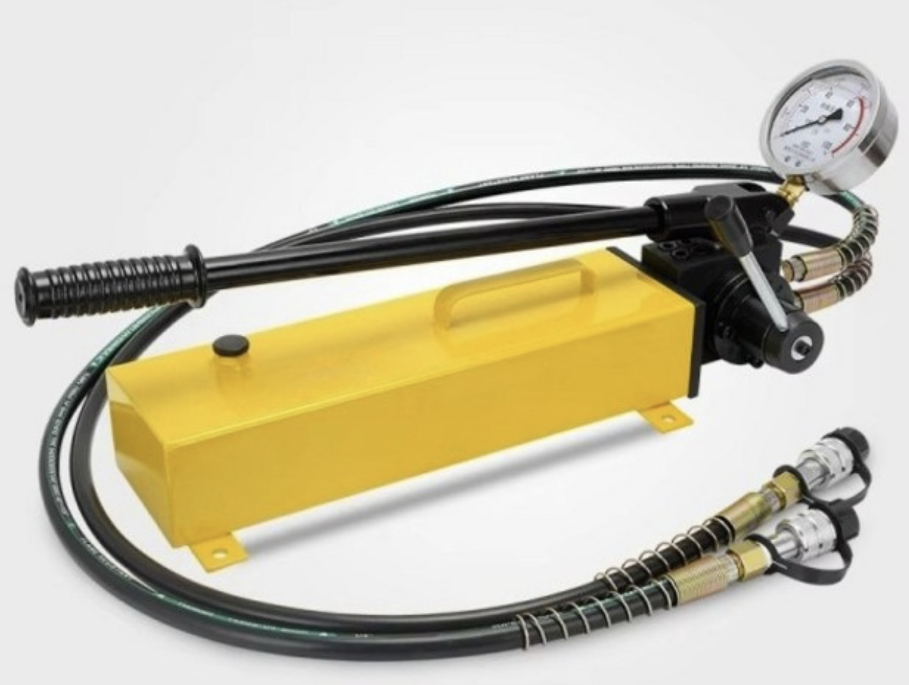
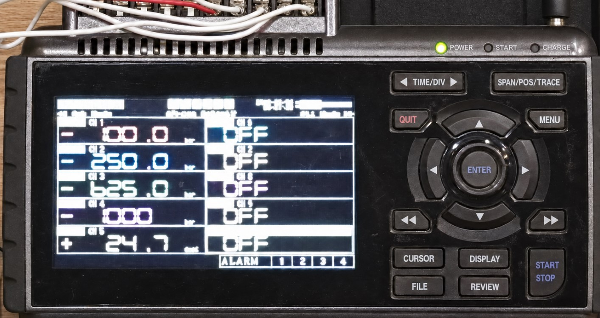
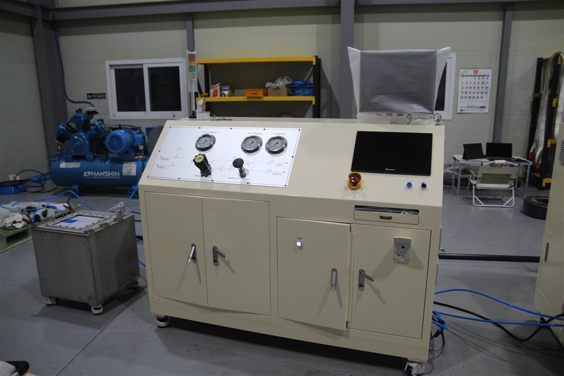
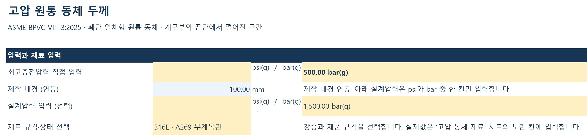

BUFFER TANK
High- and Low-Pressure Buffer Tanks
Application
- Temporary storage between the pressure source and point of use to smooth supply fluctuations
- Capacity based on consumption and allowable pressure range
- Small high-pressure vessels made to the specified operating pressure from 1 to 100 MPa and applicable safety standards
- Wall thickness calculations to the requested standards and finite element analysis (FEA) where needed
- Hydrogen service: SUS 316L and bore up to 150 mm, depending on service conditions
- Manufacturing and inspection of specified equipment under Annex 12 of Korea’s Enforcement Rule of the High-Pressure Gas Safety Control Act


MANUAL PRESSURIZATION
Manual Pressurization
Application
- Hand-pump operation to pressurize the test circuit
- Specimen volume and pump specifications checked against required pressure and medium volume
- Automatic database logging with optional pressure and temperature instrumentation


PROOF TEST
Proof Test Systems
Application
- Safety verification of high-pressure products
- Pressurization with water or another fluid within the product’s elastic range
- Deformation and leakage evaluated against the applicable standard

LEAK TEST
Leak Test Systems
Application
- Leak detection using the gas used in the product
- Pressure decay, bubble testing or another method selected for the required sensitivity and detection target

BURST TEST
Burst Test Chambers
Application
- Measurement of rupture pressure and location of specimen failure
- Test conditions and comparison criteria based on specimen specifications
- Chamber design and fabrication based on relevant standards, the maximum burst pressure and structural analysis

STRUCTURAL ANALYSIS
Structural Design and Analysis
Scope of Analysis
- Strength and deformation calculations for cylindrical tanks and safety chambers
- Structural analysis of complex geometry and loading, including support frames and joints



Information for Review
- Basic Information
- Equipment drawings, material, specimen geometry, test pressure and medium
- Analysis Conditions
- Installation, supports, loading, applicable standards and allowable limits
- Results
- Stress and deformation assessment, assumptions and scope
PRESSURE TESTING SERVICE
Contract Pressure Testing
- Specimens: small valves, fittings, vessels and other high-pressure products
- Tests: proof, leak, burst, cyclic testing and more
- Feasibility, methods and deliverables agreed after review of the specimen and requirements
- Accredited test reports available through organizations such as TÜV and SGS
What to Include in Your Inquiry
- Specimen
- Item, quantity, drawings or key dimensions, and connection specifications
- Test Conditions
- Purpose, target pressure, test medium, standards and acceptance criteria
- Results and Schedule
- Required records or report format and desired schedule
CONTACT
Equipment and Manufacturing Inquiries
- Include in your email: equipment name, test specimen, target pressure and relevant details